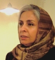

|
|
احضارو تفهیم اتهام ناهید میرحاج عضو کمپین یک میلیون امضا
يكشنبه22 دی 1387

تغییر برای برابری- ناهید میرحاج عضو کمپین یک میلیون امضا و کمیته مادران کمپین به دادگاه احضارو تفهیم اتهام شد.
ناهید میرحاج روز 23 خرداد 1387 همراه با 8 نفر دیگر از اعضای کمپین در برابر گالری ابریشم بازداشت شده بود. آن روز قراربود مراسمی برای بزرگداشت22 خرداد سالروز تجمع تاریخی زنان در برابر دانشگاه تهران برگزار شود اما نیروهای امنیتی اعلام کرده بودند که اجازه برگزاری این مراسم را نمی دهند. ناهید میرحاج به همراه چندتن از برگزارکنندگان جلوی در گالری ایستادند تا به مهمانان خبر عدم برگزاری مراسم را بدهند اما ماموران آنها را بازداشت و به بازداشتگاه وزرا منتقل کردند.
امروز 22 دی ماه او در دادسرای انقلاب حاضر شد و مورد بازپرسی قاضی سبحانی قرار گرفت و تفهیم اتهام شد. اتهامات وی تبلیغ علیه نظام، اخلال در نظم عمومی و تمرد از دستورات پلیس ذکر شد که وی نپذیرفت. برای وی قرار التزام صادر شد.